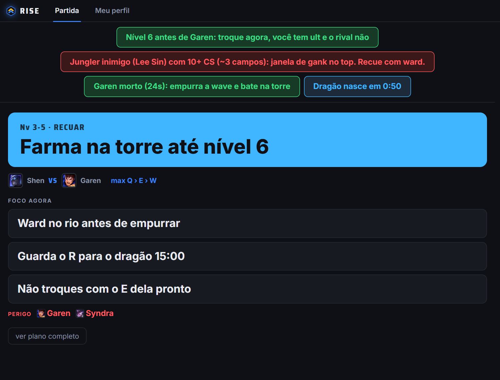

A desktop companion app that helps League of Legends players improve, game by game.
What it does
Champion select: suggests picks, runes, items and summoner spells from aggregated winrates for the player's elo, role and lane matchup.
Hover cards: the full in-game description of every suggested item, rune, stat shard, summoner spell and ability (stats, effects, cooldown, cost, price and recipe), so the player learns why each choice matters.
In game: a small overlay with the game plan for the lane and timely reminders, including the next item to buy and how much gold is still missing for it.
After the game: reviews the match (deaths, CS, objectives) and tracks the player's recurring mistakes over time.
Before the game: the plan for the lane, with runes and items applied to the client.Hover any item, rune, spell or ability for its full description.

In game: what to do right now and short reminders.After the game: the review and one focus for the next match.
Riot Games API usage
league-v4, match-v5: sample ranked solo games from the ladder to compute champion, matchup, item and spell winrates.
champion-mastery-v4: focus sampling on the champions the user plays.
account-v1: resolve the user's own Riot ID.
The local League client (LCU) is read only for the user's own session, and the Live Client Data API (localhost) only during the user's own game.
Static game data: Data Dragon for champions, items, runes, summoner spells and their descriptions; CommunityDragon for stat shard texts. No API key is used for these.
Privacy
Only aggregated statistics are stored. No personal data of other players is kept or shown. The user's own match history stays on their computer.